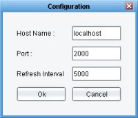

This document describes how to install both the server and client components of IronTrack SQL. If the application server you will be using resides on the same system as the one on which you will run the IronTrack SQL client, you can install both components on that system. You can also install the client and server components on separate systems.
IronTrack SQL offers many advanced configuration options. For more information, see Advanced Configuration of IronTrack SQL.
From this document, you can access the following information:
The IronTrack SQL installation process begins after you have downloaded the irontracksql-installer.jar file to the Desktop. From there, the installation process consists of the following steps:
After you have completed the installation process for your specific application server, you can begin using IronTrack SQL to monitor and manage the performance of your application's SQL statements.
To begin installing IronTrack SQL
To continue installing the IronTrack SQL server component, you will need to run the client component.
To start the client component, from the Desktop, double-click on the IronTrack SQL shortcut to display the IronTrack SQL user interface, or run java -jar irontracksql.jar from the command line.
The server component of IronTrack SQL includes specific installation instructions for each of the supported application servers. Before installing the server component, ensure that your environment meets the requirements defined in the following sections.
IronTrack SQL is supported on most Windows, UNIX, and Linux operating systems. IronTrack SQL is supported on any Java supported platform running a minimum of JDK 1.3, with JDK 1.4 recommended.
Note: You must have Java installed prior to installing IronTrack SQL.
IronTrack SQL supports the following application servers:
Note: Your installation may differ from the following examples, depending on how your application server environment is configured.
| Application Server | Version |
|---|---|
| JBoss | 2.x, 3.x |
| Oracle9iAS Container for J2EE (OC4J) | 9.0.3 |
| Jakarta Tomcat | 3.x |
| JOnAS EJB | 2.3.x |
| BEA WebLogic | 4.0, 5.1, 6.1, 7.0 |
| ATG Dynamo | 5.1 |
| Sun iPlanet | 6.0 |
| IBM WebSphere | 4.0 |
| Caucho Resin | 2.1.x |
IronTrack SQL also supports unspecified application servers and applications that do not run on application servers. For more information, see Installing IronTrack SQL on an Unspecified Application Server.
IronTrack SQL requires the following minimum disk space and memory:
Note: Logging is enabled by default, and the IronTrack SQL log file, spy.log, can get very large. To accommodate the growth of spy.log, it is recommended that you reserve significant disk space beyond these minimum requirements. For information on disabling logging, see Advanced Configuration of IronTrack SQL.
Following is the directory structure of IronTrack SQL:
IronTrack SQL
docs
ico
license
lib
Uninstaller
irongrid.properties
irontracksql.jar
log4j-1.2.8.jar
p6spy.jar
spy.properties
The /docs directory contains releaseNotesIronEyeSQL.html and the HTML help files for IronTrack SQL. You can open index.html to view all of the files in the IronTrack SQL help system.
The /ico directory contains the following files:
irongrid.ico
uninstall.ico
The /lib directory contains the following files:
alloy.jar
commons-pool.jar
jakarta-regexp-<version>.jar
janino.jar
jce-jdk<version>.jar
jcommon<version>.jar
jdom.jar
jfreechart<version>.jar
layout.jar
nanoxml.jar
nanoxml-sax.jar
sax2.jar
sax2-ext.jar
The /license directory contains the following files:
apache-license-1.1.txt
GNU-LGPL-2.1.txt
izpack-license.txt
janino.txt
jdom-license.txt
nanoxml-license.txt
p6spy-license.txt
The /Uninstaller directory contains the following files:
uninstaller.jar
The following installation instructions are intended for use with application servers not listed previously and applications that do not use application servers.
To install IronTrack SQL on an unspecified application server
Note: If you are adding irontracksql.jar and p6spy.jar to your classpath, you must reference the JAR filename directly. For example:
CLASSPATH=c:\irontrack\irontracksql.jar.
Note: If you are using an EJB server, adding the irontracksql.jar file and p6spy.jar file to your system classpath may not work. Some EJB servers ignore the system classpath, setting their own on startup.
realdriver=weblogic.jdbc.oci.Driver
Note: The value in the previous line is just an example. You must use the actual driver value provided in the application server. You also can wrap a data source. For information on wrapping a data source, see Data Source Replacement in Advanced Configuration of IronTrack SQL.
monitorport=nnnn
where nnnn is the IronTrack SQL port number; from the IronTrack SQL user interface, click on the Config button or select Configure from the Server to display the Configuration dialog, which displays the port number.

When you run your application, a log file (spy.log) is generated. The log file contains a list of all of the database statements executed. You can change both the destination of spy.log and what it logs by editing the spy.properties file. Refer to Advanced Configuration of IronTrack SQL.
To install IronTrack SQL on the JBoss 2.x server
C:\JBoss-2.2.2_Tomcat-3.2.2\jboss\lib\ext
C:\JBoss-2.2.2_Tomcat-3.2.2\jboss\db
<mbean code="org.jboss.jdbc.JdbcProvider"name="DefaultDomain:service=JdbcProvider">
<attribute name="Drivers">com.p6spy.engine.spy.P6SpyDriver</attribute>
</mbean>
realdriver=oracle.jdbc.driver.OracleDriver
Note: The value in the previous line is just an example. You must use the actual driver value provided in the application server.
monitorport=nnnn
where nnnn is the IronTrack SQL port number; from the IronTrack SQL user interface, click on the Config button or select Configure from the Server menu to display the Configuration dialog, which displays the port number.
When you run your application, a log file (spy.log) is generated in the bin directory of the JBoss server. The log file contains a list of all of the database statements executed. You can change both the destination of spy.log and what it logs by editing the spy.properties file; refer to Advanced Configuration of IronTrack SQL.
To install IronTrack SQL on JBoss 3.x
Note: The following procedure assumes you are using the default server residing in JBOSS_DIST\server\default, in which JBOSS_DIST is the directory in which JBoss is installed. These instructions are intended for wrapping driver services, not XADataSource services.
C:\java\jboss-3.0.4\server\default\lib
C:\> set JBOSS_CLASSPATH=C:\java\jboss-3.0.4\server\default\db
C:\> copy C:\java\irontrack\spy.* C:\java\jboss-3.0.4\server\default\db
<attribute name="JndiName">MySqlDS</attribute>
<attribute name="ManagedConnectionFactoryProperties">
<properties>
<config-property name="ConnectionURL" type="java.lang.String">jdbc:mysql://localhost/localdb</config-property>
<config-propertyname="DriverClass"type="java.lang.String">com.p6spy.engine.spy.P6SpyDriver</config-property>
.
.
.
Note: Make sure there is not a service that explicitly loads the wrapped driver. A service of this type will load the specified driver before P6SpyDriver, resulting in unwrapped connections.
realdriver=org.gjt.mm.musql.Driver
Note: The value in the previous line is just an example. You must use the actual driver value provided in the application server.
monitorport=nnnn
where nnnn is the IronTrack SQL port number; from the IronTrack SQL user interface, click on the Config button or select Configure from the Server to display the Configuration dialog, which displays the port number.
When you run your application, a log file (spy.log) is generated in the bin directory of the JBoss server. The log file contains a list of all of the database statements executed. You can change both the destination of spy.log and what it logs by editing the spy.properties file. Refer to Advanced Configuration of IronTrack SQL.
To install IronTrack SQL on Oracle9iAS Container for J2EE (OC4J)
<data-source name="oracleDS" class="com.evermind.sql.DriverManagerDataSource" connection-driver="com.p6spy.engine.spy.P6SpyDriver" location="jdbc/oracleDS" ejb-location="jdbc/oracleDS" xa-location="jdbc/xa/oracleXADS" url="jdbc:oracle:thin:@localhost:1521:oracleDS" inactivity-timeout="30" username="sonntag" password="shatta17"/>
monitorport=nnnn
where nnnn is the IronTrack SQL port number; from the IronTrack SQL user interface, click on the Config button or select Configure from the Server to display the Configuration dialog, which displays the port number.
java -Dp6.home=OC4J/J2EE/home/lib
When you run your application, a log file (spy.log) is generated in the <OC4J-HOME>/J2EE/home/lib directory of the OC4J server. The log file contains a list of all of the database statements executed. You can change both the destination of spy.log and what it logs by editing the spy.properties file. Refer to Advanced Configuration of IronTrack SQL.
To install IronTrack SQL on Jakarta Tomcat 3.x
Note: Since you typically write or otherwise obtain your own Connection Pool when using Tomcat, this procedure may differ by application.
C:\jakarta-tomcat-3.2.1\webapps\p6\WEB-INF\lib
C:\jakarta-tomcat-3.2.1\webappp6\WEB-INF\classes
<init-param>
<param-name>databaseDriver</param-name>
<param-value>org.gjt.mm.mysql.Driver</param-value>
</init-param>
In this case, the databaseDriver parameter has a value of org.gjt.mm.mysql.Driver, which is the MySql driver. Wherever this configuration information is stored, change the driver name (org.gjt.mm.mysql.Driver, in this example) to com.p6spy.engine.spy.P6SpyDriver:
<init-param>
<param-name>databaseDriver</param-name>
<param-value>com.p6spy.engine.spy.P6SpyDriver</param-value>
</init-param>
realdriver=org.gjt.mm.mysql.Driver
Note: The value in the previous line is just an example. You must use the actual driver value provided in the application server.
monitorport=nnnn
where nnnn is the IronTrack SQL port number; from the IronTrack SQL user interface, click on the Config button or select Configure from the Server to display the Configuration dialog, which displays the port number.
When you run your application, a log file (spy.log) is generated in the directory from which you launched the application. The log file contains a list of all of the database statements executed. You can change both the destination of spy.log and what it logs by editing the spy.properties file. Refer to Advanced Configuration of IronTrack SQL.
To install IronTrack SQL on JOnAS EJB 2.3x
datasource.name jdbc_1 datasource.description "Standard jdbc driver for Oracle" datasource.url jdbc:oracle:thin:scott/tiger@maltes:1521:ORA1 datasource.classname com.p6spy.engine.spy.P6SpyDriver ...
Note: Database access configuration within JOnAS is described in a DataSource property file, such as Oracle1.properties. Refer to the JOnAS Bean Programmer’s Guide for more details.
realdriver=oracle.jdbc.driver.OrcleDriver
Note: The value in the previous line is just an example. You must use the actual driver value provided in the application server.
monitorport=nnnn
where nnnn is the IronTrack SQL port number; from the IronTrack SQL user interface, click on the Config button or select Configure from the Server to display the Configuration dialog, which displays the port number.
When you run your application, a log file (spy.log) is generated in the directory from which you launched the application. The log file contains a list of all of the database statements executed. You can change both the destination of spy.log and what it logs by editing the spy.properties file. Refer to Advanced Configuration of IronTrack SQL.
To install IronTrack SQL on BEA WebLogic Portal 4.0
Note: This example uses the default Stockportal (Avitek) application.
realdriver=weblogic.jdbc.oci.Driver
Note: The value in the previous line is just an example. You must use the actual driver value provided in the application server.
monitorport=nnnn
where nnnn is the IronTrack SQL port number; from the IronTrack SQL user interface, click on the Config button or select Configure from the Server to display the Configuration dialog, which displays the port number.
When you run your application, a log file (spy.log) is generated in bea-home\wlportal4.0. The log file contains a list of all of the database statements executed. You can change both the destination of spy.log and what it logs by editing the spy.properties file. Refer to Advanced Configuration of IronTrack SQL.
To install IronTrack SQL on BEA WebLogic 5.1
realdriver=weblogic.jdbc.oci.Driver
Note: The value in the previous line is just an example. You must use the actual driver value provided in the application server.
monitorport=nnnn
where nnnn is the IronTrack SQL port number; from the IronTrack SQL user interface, click on the Config button or select Configure from the Server to display the Configuration dialog, which displays the port number.
When you run your application, a log file (spy.log) is generated in the WebLogic home directory. The log file contains a list of all of the database statements executed. You can change both the destination of spy.log and what it logs by editing the spy.properties file. Refer to Advanced Configuration of IronTrack SQL.
To install IronTrack SQL on BEA WebLogic Server 6.1
realdriver=weblogic.jdbc.oci.Driver
Note: The value in the previous line is just an example. You must use the actual driver value provided in the application server.
monitorport=nnnn
where nnnn is the IronTrack SQL port number; from the IronTrack SQL user interface, click on the Config button or select Configure from the Server to display the Configuration dialog, which displays the port number.
The startWebLogic.cmd file resides in bea-home\wlserver6.1\config\your-domain. Do not include any trailing spaces after the new line. This adds irontracksql.jar and spy.properties to the classpath.
When you run your application, a log file (spy.log) is generated in bea-home\wlserver6.1. The log file contains a list of all of the database statements executed. You can change both the destination of spy.log and what it logs by editing the spy.properties file. Refer to Advanced Configuration of IronTrack SQL.
To install IronTrack SQL on BEA WebLogic Server 7.0
realdriver=weblogic.jdbc.oci.Driver
Note: The value in the previous line is just an example. You must use the actual driver value provided in the application server.
monitorport=nnnn
where nnnn is the IronTrack SQL port number; from the IronTrack SQL user interface, click on the Config button or select Configure from the Server to display the Configuration dialog, which displays the port number.
bea-home\weblogic700\server\ext\irontracksql.jar
bea-home\weblogic700\server\ext\p6spy.jar
bea-home\weblogic700\server\ext
Note: Do not include any trailing spaces after the new line.
When you run your application, a log file (spy.log) is generated in bea-home\weblogic700\server\ext. The log file contains a list of all of the database statements executed. You can change both the destination of spy.log and what it logs by editing the spy.properties file. For more information, see Advanced Configuration of IronTrack SQL.
To install IronTrack SQL on ATG Dynamo
Note: The default user and password is admin/admin.
C:\irontrack\irontracksql.jar.
C:\irontrack
realdriver=oracle.jdbc.driver.OracleDriver
realdriver=solid.jdbc.SolidDriver
Note: The value in the previous line is just an example. You must use the actual driver value provided in the application server.
monitorport=nnnn
where nnnn is the IronTrack SQL port number; from the IronTrack SQL user interface, click on the Config button or select Configure from the Server to display the Configuration dialog, which displays the port number.
Following is an example setup:
| Property | Value |
|---|---|
| URL | jdbc:solid://localhost:1313 |
| Driver | com.p6spy.engine.spy.P6SpyDriver |
| Database server name | localhost:1313 |
| User name | admin |
| Password | admin |
| Confirm password | admin |
When you run your application, a log file (spy.log) is generated in the C:\ATG\Dynamo5.1\home directory. The log file contains a list of all of the database statements executed. You can change both the destination of spy.log and what it logs by editing the spy.properties file. Refer to Advanced Configuration of IronTrack SQL.
To install IronTrack SQL on Sun iPlanet
Driver Identifier: spy
Driver Classname: com.p6spy.engine.spy.P6SpyDriver
Driver Classpath: spy-home\irontracksql.jar
iasdeploy regdatasource -user iPlanet_admin_username -password iPlanet_admin_password -host localhost -port iPlanet_admin _port config_filename
where iPlanet_admin_username is your iPlanet admin username, iPlanet_admin_password is your iPlanet administrative password, iPlanet_admin_port is the iPlanet administrative port number, and config_filename is the fully-qualified path to the file containing your DataSource configuration.
For example:
<ias-resource>
<resource>
<jndi-name>jdbc/yourapp/ora-type4-spy</jndi-name>
<jdbc>
<driver-type>spy</driver-type>
<database-url>jdbc:oracle:thin:@localhost:1521:orcl</database-url>
<username>aladdin</username>
<password>sesame</password>>
</jdbc>
</resource>
</ias-resource>
Note: For more details about parameters passed to iasdeploy and the format of config_filename, refer to the iPlanet documentation.
monitorport=nnnn
where nnnn is the IronTrack SQL port number; from the IronTrack SQL user interface, click on the Config button or select Configure from the Server to display the Configuration dialog, which displays the port number.
When you run your application, a log file (spy.log) is generated. The log file contains a list of all of the database statements executed. You can change both the destination of spy.log and what it logs by editing the spy.properties file. Refer to Advanced Configuration of IronTrack SQL.
To install IronTrack SQL on IBM WebSphere 4.0
Note: Before installing IronTrack SQL, configure your JDBC driver in your target application server as a DataSource.
port 3306
serverName myhost
Server Class Path = path_to_irontracksql.jar
Name = P6SpyDriver
Description = P6Spy JDBC tracing driver
Implementation Classname = com.p6spy.engine.spy.P6ConnectionPoolDataSource
Use a different value for the data source name, and do not set any driver specific properties.
realdatasource=RealMySqlDS
realdatasourceclass=com.mysql.jdbc.jdbc2.optional.MysqlDataSource
realdatasourceproperties=port;3306,serverName;myhost
Note: The items in realdatasourceproperties are the items that you recorded from the Driver Specific properties in your original data source configuration. See Data Source Replacement in Advanced Configuration of IronTrack SQL for more information about wrapping your data source.
monitorport=nnnn
where nnnn is the IronTrack SQL port number; from the IronTrack SQL user interface, click on the Config button or select Configure from the Server to display the Configuration dialog, which displays the port number.
When you run your application, a log file (spy.log) is generated in the bin directory of the WebSphere server. The log file contains a list of all of the database statements executed. You can change both the destination of spy.log and what it logs by editing the spy.properties file. Refer to Advanced Configuration of IronTrack SQL.
To install IronTrack SQL on Resin
Note: Since you typically write or otherwise obtain your own connection pool when using Resin, this procedure may differ by application.
<init-param>
<param-name>db.driver</param-name>
<!-- mysql (mm driver) -->
<param-value>org.gjt.mm.mysql.Driver</param-value>
</init-param>
In this case, the db.driver parameter has a value of org.gjt.mm.mysql.Driver, which is the MySQL driver. Wherever this configuration information is stored, change the driver name (org.gjt.mm.mysql.Driver, in this example) to com.p6spy.engine.spy.P6SpyDriver, as in the following example:
<init-param>
<param-name>db.driver</param-name>
<!-- mysql (mm driver) -->
<param-value>com.p6spy.engine.spy.P6SpyDriver</param-value>
</init-param>
realdriver=org.gjt.mm.mysql.Driver
Note: The value in the previous line is just an example. You must use the actual driver value provided in the application server.
monitorport=nnnn
where nnnn is the IronTrack SQL port number; from the IronTrack SQL user interface, click on the Config button or select Configure from the Server to display the Configuration dialog, which displays the port number.
C:\resin-2.1.6\bin\httpd - -Dp6.home=C:\resin-2.1.6\webapps\your_app_name\WEB-INF\lib
When you run your application, a log file (spy.log) is generated. The log file contains a list of all of the database statements executed. You can change both the destination of spy.log and what it logs by editing the spy.properties file. Refer to Advanced Configuration of IronTrack SQL.
To uninstall the IronTrack SQL application, run the uninstaller.jar file located at the top level of the IronTrack SQL directory. Then remove the setting applied to your application by pointing it back to the original JDBC driver.
To upgrade IronTrack SQL from a previous version, follow the procedures provided in sections of this document that address your application server.
Note: IronGrid recommends uninstalling a previous version prior to upgrading.
To upgrade IronTrack SQL on the application server
module.monitor=com.irongrid.monitor.server.MonitorFactory
monitorport=nnnn
where nnnn is the IronTrack SQL port number.
When you run your application, a spy.log file is generated and the server module for IronTrack SQL is loaded on port nnnn based on the lines entered in spy.properties above. Run the client and configure the server and port options. Click on the Connect button to begin seeing data pass through. See Advanced Configuration of IronTrack SQL for more options.